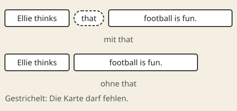

Was ich denke: der that-Satz
Mit einem KI-Tutor lernen
Ein KI-Tutor erklärt dir diese Seite und hilft dir bei den Aufgaben. Wähl deinen Assistenten:
Mit Claude öffnen Mit ChatGPT öffnen Mit Mistral Vibe öffnen
Du nutzt dein eigenes Konto beim Anbieter. Der Assistent ist kein Angebot von lernapps.net: lernapps liefert nur Inhalte und Aufgaben. Die Wahl gilt für alle Seiten, nur auf diesem Gerät.
Was kommt hinter I think?

Von links: Sophie (Zöpfe), Peter (gelbe Jacke), Ellie (roter Pferdeschwanz), Amir (Brille) und Mr Hill (graue Haare). Ellie hat „I think“ aufgehängt, Peter den langen Streifen. Sophie fragt.
Quelle: eigene Zeichnung. Lizenz: CC-BY-4.0.Ellie hat den Streifen „I think“ aufgehängt. Das heißt: Ich glaube. Sophie fragt: „What comes next?“ Was kommt als Nächstes? Peter hat den Streifen „football is fun.“ dazugehängt. Football heißt Fußball, fun heißt Spaß.
Aufgabe
Lösung
Ein ganzer Satz, zum Beispiel „football is fun.“ richtige Antwort
Hinter I think kommt, was Ellie glaubt. Das ist ein ganzer Satz mit Subjekt und Verb.
Nur ein Wort, zum Beispiel „fun“
Ein einzelnes Wort ist kein Satz. Hinter I think braucht der Streifen ein Subjekt und ein Verb.
Ein Streifen mit Grund, zum Beispiel „because it is fun“
Because nennt einen Grund. Hier geht es darum, was Ellie glaubt, nicht warum.
Hinter I think steht ein ganzer Satz.
Das kannst du danach: Du sagst, was du glaubst, weißt oder hoffst, und was andere sagen. Du weißt, wann die Karte that fehlen darf.
| Ausdruck | Bedeutung |
|---|---|
| think | glauben / denken |
| know | wissen |
| say | sagen |
| hope | hoffen |
| fun | Spaß |
| easy | leicht |
| difficult | schwierig |
| right | richtig |
| nice | nett |
| English | Englisch |
| warm | warm |
| happy | froh |
| today | heute |
| tired | müde |
| hungry | hungrig |
| test | Test |
Die Karte that darf fehlen
Nach think, know, say und hope kommt ein zweiter Streifen. Er sagt, was jemand glaubt, weiß, sagt oder hofft. Die Karte dazwischen heißt that. Sie verbindet die Streifen wie die Karten der Seite davor. Sie ist gestrichelt, denn man darf sie weglassen.

Oben mit that, unten ohne. Beide Sätze sind richtig. Die gestrichelte Karte darf fehlen.
Quelle: eigene Zeichnung. Lizenz: CC-BY-4.0.Merke
Kein Komma vor that, und der zweite Streifen bleibt ein normaler Satz. Im Deutschen steht vor „dass“ ein Komma und das Verb ganz hinten. Im Englischen nicht: „She says (that) you are nice.“ heißt Sie sagt, dass du nett bist.
Übung
Aufgabe
Lösung
English is easy richtige Antwort
Das ist ein ganzer Satz mit Subjekt und Verb. Er sagt, was du glaubst.
Peter is hungry richtige Antwort
Auch das ist ein ganzer Satz mit Subjekt und Verb.
easy
Ein einzelnes Wort ist kein Satz. Es fehlen Subjekt und Verb.
tired and hungry
Hier fehlen Subjekt und Verb. Es ist kein ganzer Streifen.
Hinter I think steht ein ganzer Satz. Die Karte that darf davor stehen oder fehlen.
Aufgabe
Welche Karte passt in die Lücke? Lies zuerst den deutschen Satz.
- Ich glaube, dass Peter müde ist. → I think … Peter is tired.
- Amir weiß, dass der Test leicht ist. → Amir knows … the test is easy.
- Ellie sagt, dass Englisch Spaß macht. → Ellie says … English is fun.
Lösung
- I think that Peter is tired.
- Amir knows that the test is easy.
- Ellie says that English is fun.
Aufgabe
Hänge die zwei Streifen aneinander. Du darfst that schreiben oder weglassen.
- I think · Amir is happy
- Ellie knows · the test is difficult
- Mr Hill says · you are right
- Peter hopes · it is warm today
Lösung
- I think that Amir is happy. (auch richtig: I think that Amir's happy.; I think Amir is happy.; I think Amir's happy.)
- Ellie knows that the test is difficult. (auch richtig: Ellie knows the test is difficult.)
- Mr Hill says that you are right. (auch richtig: Mr Hill says that you're right.; Mr Hill says you are right.; Mr Hill says you're right.)
- Peter hopes that it is warm today. (auch richtig: Peter hopes that it's warm today.; Peter hopes it is warm today.; Peter hopes it's warm today.)
Aufgabe
Übersetze den Satz. Du darfst that weglassen.
- Ich glaube, dass Englisch leicht ist.
- Wir wissen, dass du müde bist.
- Sophie hofft, dass Millbrook nett ist.
Lösung
- I think that English is easy. (auch richtig: I think English is easy.)
- We know that you are tired. (auch richtig: We know that you're tired.; We know you are tired.; We know you're tired.)
- Sophie hopes that Millbrook is nice. (auch richtig: Sophie hopes Millbrook is nice.)
Aufgabe
Hör zu und schreibe, was du hörst.
- KI
- KI
- KI
Lösung
- I think that you are right. (auch richtig: I think that you're right.; I think you are right.; I think you're right.)
- Ellie knows that Peter is hungry. (auch richtig: Ellie knows Peter is hungry.)
- They know that Sophie is right. (auch richtig: They know Sophie is right.)
Selbst sagen und schreiben
Aufgabe
Hör zu, sprich nach und nimm dich auf. Vergleiche dann mit dem Original.
Tipp
Hör den Satz zuerst. Sprich dann langsam nach. Das Wort that betonst du kaum.
- Mr Hill hopes that we are happy.KI
- Sophie says that English is difficult.KI
- I think that it is warm in Millbrook.KI
Zum Aufnehmen braucht diese Aufgabe JavaScript. Die Beispiele kannst du auch ohne anhören.
Lösung
- Mr Hill hopes that we are happy.
- Sophie says that English is difficult.
- I think that it is warm in Millbrook.
Offene Aufgabe
Schreibe zwei englische Sätze für die Satzstreifen-Wand. Der erste beginnt mit I think und sagt, was du über Englisch denkst. Der zweite beginnt mit I know und sagt, was du über dich weißt.
Eine gute Antwort enthält:
Lösung
I think that English is fun. I know that I am a good friend.
Wie es weitergeht
Amir hängt einen Streifen auf: „Amir is the boy.“ Doch welcher Junge? Peter fragt, wer gemeint ist. Auf der nächsten Seite lernst du, wie ein zweiter Streifen eine Person oder Sache genauer beschreibt.